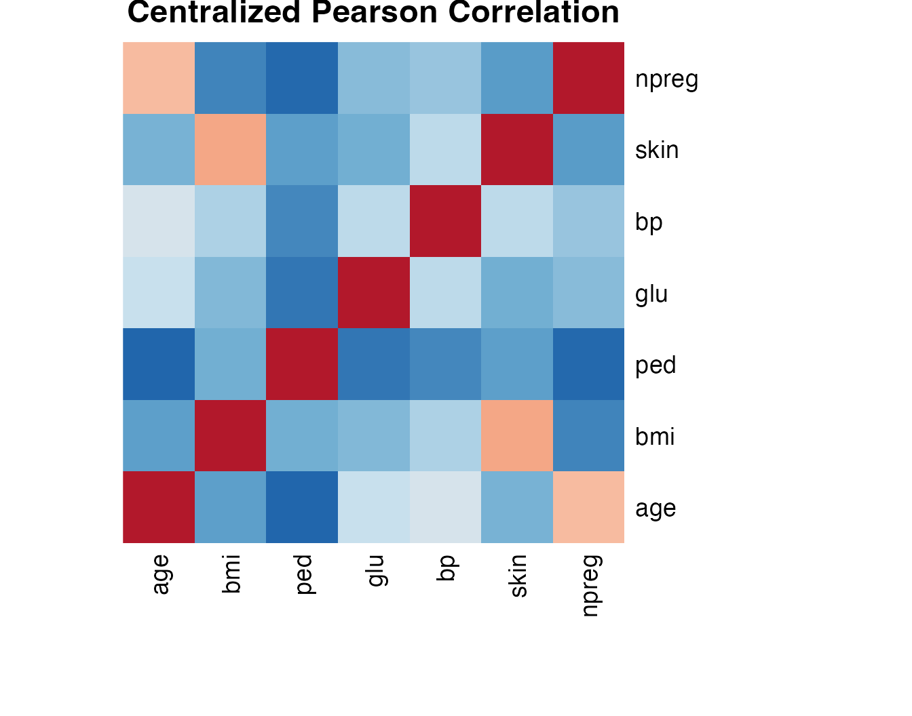
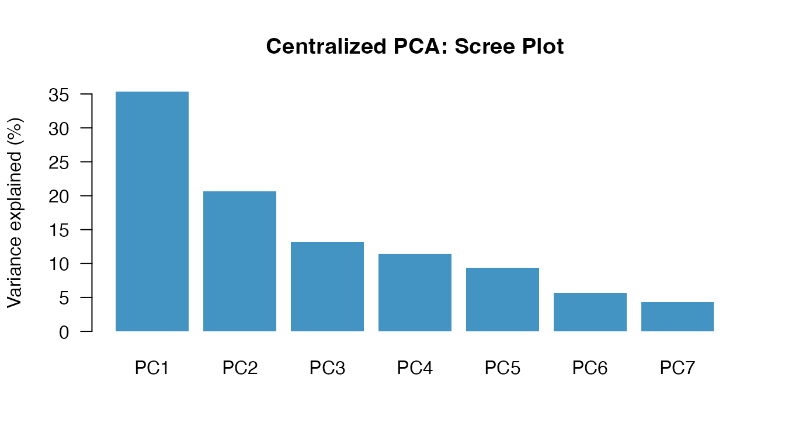
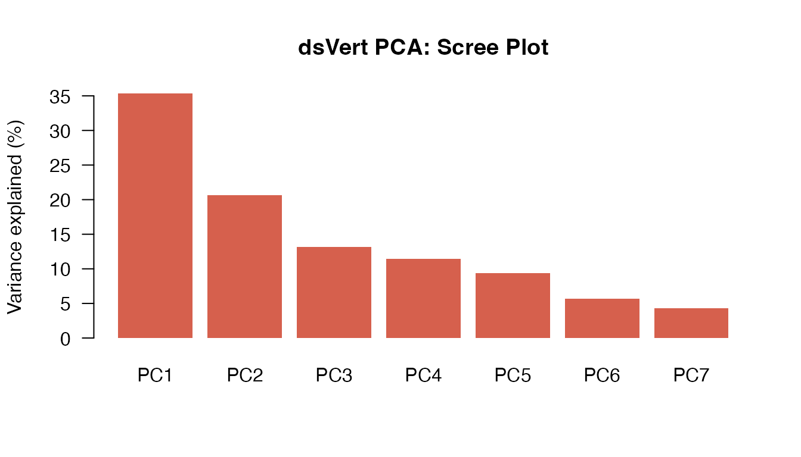
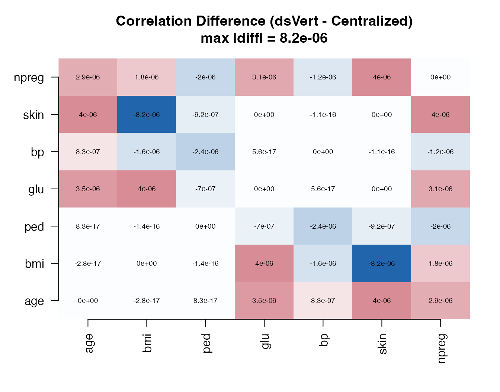
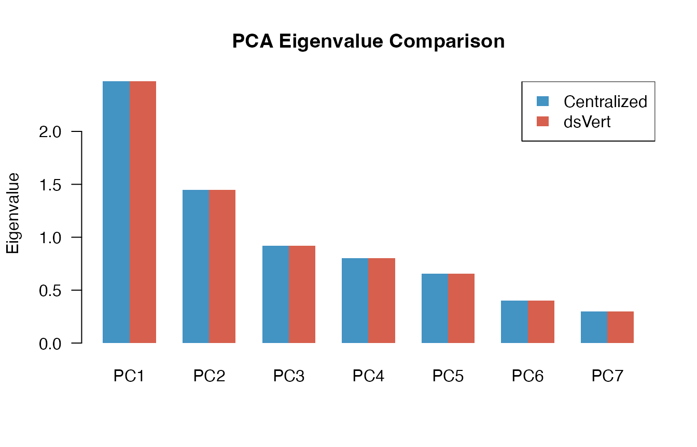
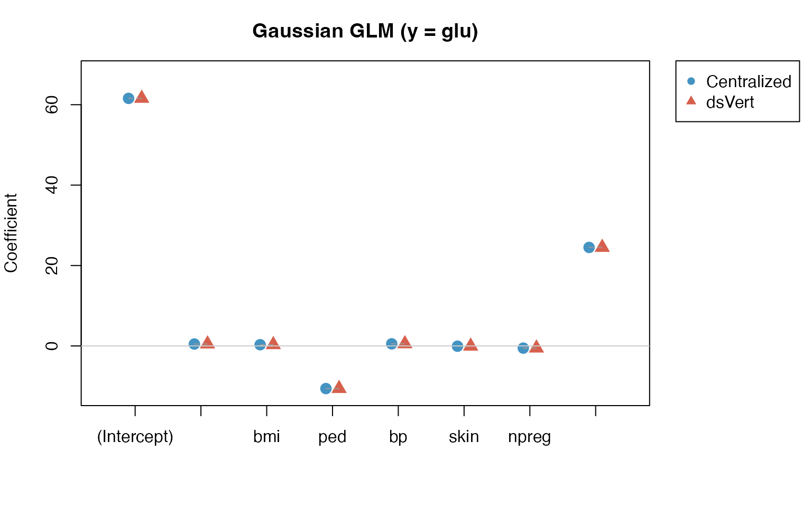
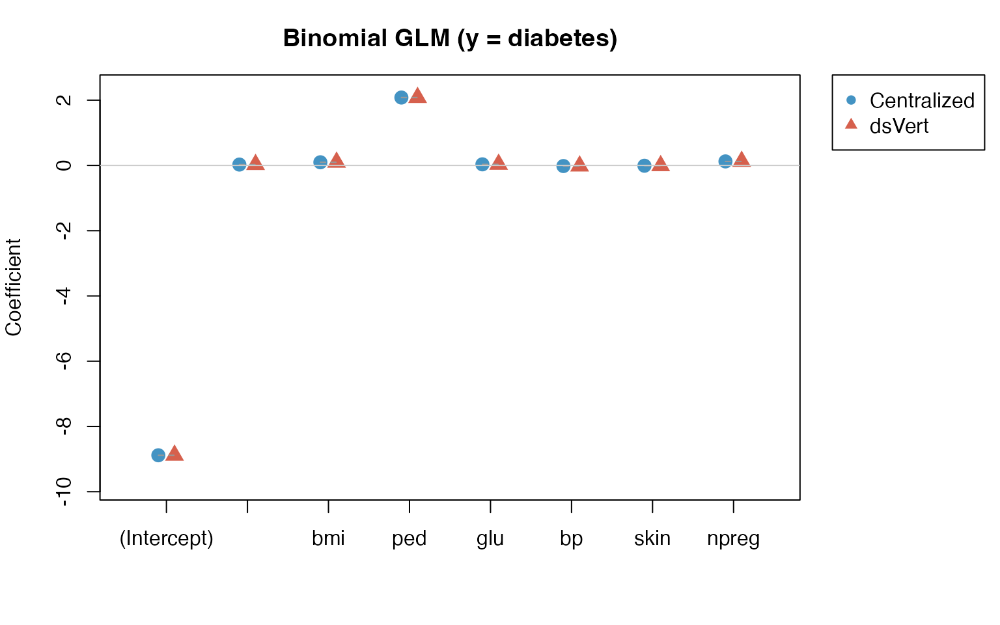
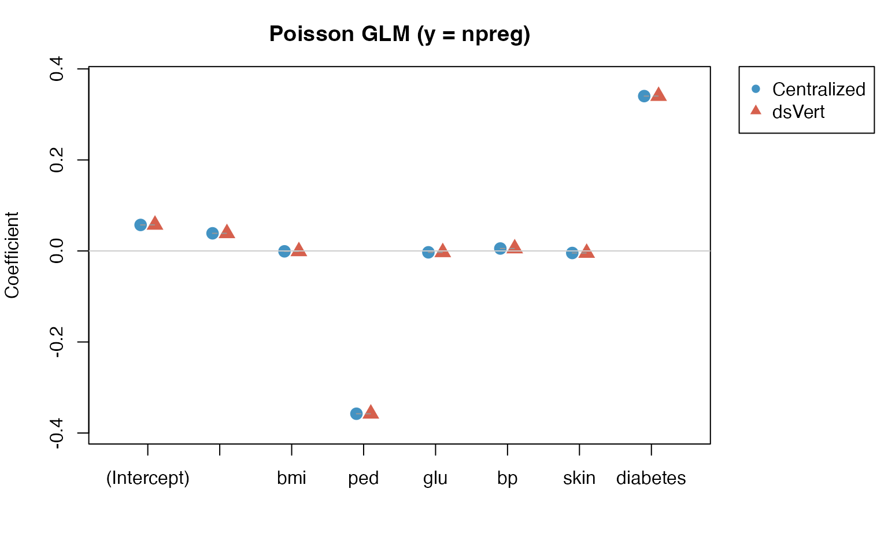

Validation Study: Centralized vs. Federated Vertical Analysis
David Sarrat González
Source:vignettes/validation.Rmd
validation.RmdIntroduction
This vignette presents a comparative validation of the dsVert federated vertical analysis pipeline against centralized R computations. We exercise the full protocol stack — ECDH-PSI record alignment, MHE-CKKS correlation, spectral PCA, and encrypted-label GLMs — on real data vertically partitioned across three DataSHIELD servers.
The study is organized in three parts:
- Federated vertical analysis — PSI alignment followed by correlation, PCA, and GLMs computed via dsVert, where each server holds a different subset of variables and no raw data leaves any server.
- Centralized analysis — ground truth computed with standard R functions on the matched cohort.
- Comparative assessment — side-by-side numerical comparison with error analysis.
Dataset
We use a modified version of the Pima Indian women diabetes training
set (Pima.tr,
)
from the MASS R package (Venables & Ripley, 2002). It contains
clinical measurements for 200 women of Pima heritage aged
years, collected by the US National Institute of Diabetes and Digestive
and Kidney Diseases near Phoenix, Arizona (Smith et al., 1988). Seven
numeric variables are available: npreg (number of
pregnancies), glu (plasma glucose), bp
(diastolic blood pressure), skin (triceps skin fold
thickness), bmi (body mass index), ped
(diabetes pedigree function), and age (years).
Vertical partitioning scheme
The data are vertically split across three servers, each representing a different clinical domain. Crucially, the patient populations are not identical: each server holds a different number of patients, with only a partial overlap. This simulates a realistic scenario where institutions have data on overlapping but non-identical patient cohorts.
| Server | Patients | Domain | Variables |
|---|---|---|---|
| server1 | 180 | Anthropometric / familial |
patient_id, age, bmi,
ped
|
| server2 | 175 | Glucose and cardiovascular |
patient_id, glu, bp,
skin
|
| server3 | 170 | Reproductive / outcome |
patient_id, npreg,
diabetes
|
Row order is independently shuffled per server. The ECDH-PSI protocol must identify the common cohort (155 patients present in all three servers) without revealing which IDs are shared.
Connect to DataSHIELD and align records
We connect to three independent DataSHIELD sessions, each hosting one vertical partition on separate Opal instances.
library(DSI)
library(DSOpal)
library(dsVertClient)
options(opal.verifyssl = FALSE)
builder <- DSI::newDSLoginBuilder()
builder$append(server = "server1", url = "https://localhost:8443",
user = "administrator", password = "admin123",
driver = "OpalDriver", table = "pima_project.pima_data")
builder$append(server = "server2", url = "https://localhost:8444",
user = "administrator", password = "admin123",
driver = "OpalDriver", table = "pima_project.pima_data")
builder$append(server = "server3", url = "https://localhost:8445",
user = "administrator", password = "admin123",
driver = "OpalDriver", table = "pima_project.pima_data")
conns <- DSI::datashield.login(builder$build(), assign = TRUE, symbol = "D")PSI Record Alignment
Each server only knows its own patient identifiers. The ECDH-PSI protocol finds the common cohort using elliptic curve Diffie-Hellman blind relay, without revealing which IDs are shared or which patients are unique to each server.
psi_result <- ds.psiAlign(
data_name = "D",
id_col = "patient_id",
newobj = "D_aligned",
datasources = conns
)#> === ECDH-PSI Record Alignment (Blind Relay) ===
#> Reference: server1, Targets: server2, server3
#>
#> [Phase 0] Transport key exchange...
#> Transport keys exchanged.
#> [Phase 1] Reference server masking IDs...
#> server1: 180 IDs masked (stored server-side)
#> [Phase 2] server1: exporting encrypted points for server2...
#> [Phase 3] server2: processing (blind relay)...
#> server2: 175 IDs masked
#> [Phase 4-5] server2: double-masking via server1 (blind relay)...
#> [Phase 6-7] server2: matching and aligning (blind relay)...
#> [Phase 2] server1: exporting encrypted points for server3...
#> [Phase 3] server3: processing (blind relay)...
#> server3: 170 IDs masked
#> [Phase 4-5] server3: double-masking via server1 (blind relay)...
#> [Phase 6-7] server3: matching and aligning (blind relay)...
#> [Phase 7] server1: self-aligning...
#> [Phase 8] Computing multi-server intersection...
#> Common records: 155#> PSI alignment complete.The PSI protocol identified **** patients present in all three servers. The matched cohort is now row-aligned across servers: each row index corresponds to the same patient, enabling cross-server computations.
Centralized analysis (ground truth)
We load the matched ground truth dataset and compute all analyses with standard R functions. These serve as the reference baseline.
demo_dir <- normalizePath(file.path(
system.file(package = "dsVertClient"), "..", "..", "demo"
), mustWork = FALSE)
if (!dir.exists(demo_dir))
demo_dir <- normalizePath("../../demo", mustWork = FALSE)
if (!dir.exists(demo_dir))
demo_dir <- Sys.getenv("DSVERT_DEMO_DIR",
unset = "/Users/david/Documents/GitHub/dsvert-paper/demo")
full <- merge(merge(
read.csv(file.path(demo_dir, "pima_server1.csv")),
read.csv(file.path(demo_dir, "pima_server2.csv")), by = "patient_id"),
read.csv(file.path(demo_dir, "pima_server3.csv")), by = "patient_id")
# Keep only the matched cohort
full <- full[order(full$patient_id), ]
num_vars <- c("age", "bmi", "ped", "glu", "bp", "skin", "npreg")
cat("Ground truth dataset:", nrow(full), "rows x", ncol(full), "columns\n")#> Ground truth dataset: 155 rows x 9 columnsPearson correlation
local_cor <- cor(full[, num_vars])#> age bmi ped glu bp skin npreg
#> age 1.0000 0.1132 -0.0810 0.3346 0.3806 0.1731 0.6468
#> bmi 0.1132 1.0000 0.1601 0.1982 0.2785 0.6993 0.0229
#> ped -0.0810 0.1601 1.0000 -0.0182 0.0358 0.1056 -0.0645
#> glu 0.3346 0.1982 -0.0182 1.0000 0.3176 0.1639 0.2048
#> bp 0.3806 0.2785 0.0358 0.3176 1.0000 0.3099 0.2371
#> skin 0.1731 0.6993 0.1056 0.1639 0.3099 1.0000 0.0962
#> npreg 0.6468 0.0229 -0.0645 0.2048 0.2371 0.0962 1.0000
PCA (spectral decomposition)
local_pca <- eigen(local_cor)
local_eigenvalues <- local_pca$values
local_loadings <- local_pca$vectors
rownames(local_loadings) <- num_vars
colnames(local_loadings) <- paste0("PC", seq_along(num_vars))
local_ve <- local_eigenvalues / sum(local_eigenvalues) * 100| Component | Eigenvalue | Variance | Cumulative |
|---|---|---|---|
| PC1 | 2.4078 | 34.4% | 34.4% |
| PC2 | 1.5646 | 22.4% | 56.7% |
| PC3 | 0.9241 | 13.2% | 70% |
| PC4 | 0.8302 | 11.9% | 81.8% |
| PC5 | 0.6546 | 9.4% | 91.2% |
| PC6 | 0.3268 | 4.7% | 95.8% |
| PC7 | 0.2919 | 4.2% | 100% |

GLM — Gaussian (y = glu)
local_gauss <- glm(glu ~ age + bmi + ped + bp + skin + npreg + diabetes,
data = full, family = gaussian)#>
#> Call:
#> glm(formula = glu ~ age + bmi + ped + bp + skin + npreg + diabetes,
#> family = gaussian, data = full)
#>
#> Coefficients:
#> Estimate Std. Error t value Pr(>|t|)
#> (Intercept) 61.57049 17.16640 3.587 0.000455 ***
#> age 0.47625 0.26661 1.786 0.076110 .
#> bmi 0.30336 0.50069 0.606 0.545527
#> ped -10.60197 8.53231 -1.243 0.216006
#> bp 0.52103 0.21724 2.398 0.017719 *
#> skin -0.06805 0.28099 -0.242 0.808966
#> npreg -0.53896 0.83648 -0.644 0.520378
#> diabetes 24.50020 5.08192 4.821 3.53e-06 ***
#> ---
#> Signif. codes: 0 '***' 0.001 '**' 0.01 '*' 0.05 '.' 0.1 ' ' 1
#>
#> (Dispersion parameter for gaussian family taken to be 709.1053)
#>
#> Null deviance: 145150 on 154 degrees of freedom
#> Residual deviance: 104238 on 147 degrees of freedom
#> AIC: 1467.1
#>
#> Number of Fisher Scoring iterations: 2GLM — Binomial (y = diabetes)
local_binom <- glm(diabetes ~ age + bmi + ped + glu + bp + skin + npreg,
data = full, family = binomial)#>
#> Call:
#> glm(formula = diabetes ~ age + bmi + ped + glu + bp + skin +
#> npreg, family = binomial, data = full)
#>
#> Coefficients:
#> Estimate Std. Error z value Pr(>|z|)
#> (Intercept) -8.883453 1.890999 -4.698 2.63e-06 ***
#> age 0.026652 0.024444 1.090 0.2756
#> bmi 0.096796 0.047663 2.031 0.0423 *
#> ped 2.080959 0.815194 2.553 0.0107 *
#> glu 0.033378 0.008099 4.122 3.76e-05 ***
#> bp -0.018833 0.021507 -0.876 0.3812
#> skin -0.009199 0.025722 -0.358 0.7206
#> npreg 0.123347 0.075740 1.629 0.1034
#> ---
#> Signif. codes: 0 '***' 0.001 '**' 0.01 '*' 0.05 '.' 0.1 ' ' 1
#>
#> (Dispersion parameter for binomial family taken to be 1)
#>
#> Null deviance: 194.93 on 154 degrees of freedom
#> Residual deviance: 142.42 on 147 degrees of freedom
#> AIC: 158.42
#>
#> Number of Fisher Scoring iterations: 5GLM — Poisson (y = npreg)
local_pois <- glm(npreg ~ age + bmi + ped + glu + bp + skin + diabetes,
data = full, family = poisson)#>
#> Call:
#> glm(formula = npreg ~ age + bmi + ped + glu + bp + skin + diabetes,
#> family = poisson, data = full)
#>
#> Coefficients:
#> Estimate Std. Error z value Pr(>|z|)
#> (Intercept) 0.230581 0.366587 0.629 0.52935
#> age 0.040632 0.003696 10.994 < 2e-16 ***
#> bmi -0.015161 0.010225 -1.483 0.13815
#> ped -0.148033 0.179165 -0.826 0.40867
#> glu -0.002226 0.001556 -1.431 0.15244
#> bp 0.002513 0.004372 0.575 0.56545
#> skin 0.006332 0.005583 1.134 0.25676
#> diabetes 0.274992 0.102384 2.686 0.00723 **
#> ---
#> Signif. codes: 0 '***' 0.001 '**' 0.01 '*' 0.05 '.' 0.1 ' ' 1
#>
#> (Dispersion parameter for poisson family taken to be 1)
#>
#> Null deviance: 491.6 on 154 degrees of freedom
#> Residual deviance: 310.1 on 147 degrees of freedom
#> AIC: 730.14
#>
#> Number of Fisher Scoring iterations: 5Federated vertical analysis (dsVert)
We now repeat every analysis using the dsVert federated protocol. Each server only has access to its own subset of variables. Cross-server quantities (such as correlation matrix off-diagonal blocks, and gradients involving variables from multiple servers) are computed under multiparty homomorphic encryption (MHE-CKKS) with threshold decryption, so individual-level data never leaves any server.
Correlation (MHE-CKKS)
The ds.vertCor function computes the full
Pearson correlation matrix. Within-server blocks are computed locally;
cross-server blocks use CKKS encrypted dot products with threshold
decryption and server-side fusion.
variables <- list(
server1 = c("age", "bmi", "ped"),
server2 = c("glu", "bp", "skin"),
server3 = c("npreg")
)
cor_result <- ds.vertCor(
data_name = "D_aligned",
variables = variables,
log_n = 12,
log_scale = 40,
datasources = conns
)
dsvert_cor <- cor_result$correlation#> age bmi ped glu bp skin npreg
#> age 1.0000 0.1132 -0.0810 0.3346 0.3806 0.1731 0.6468
#> bmi 0.1132 1.0000 0.1601 0.1982 0.2785 0.6993 0.0229
#> ped -0.0810 0.1601 1.0000 -0.0182 0.0358 0.1056 -0.0645
#> glu 0.3346 0.1982 -0.0182 1.0000 0.3176 0.1639 0.2048
#> bp 0.3806 0.2785 0.0358 0.3176 1.0000 0.3099 0.2371
#> skin 0.1731 0.6993 0.1056 0.1639 0.3099 1.0000 0.0962
#> npreg 0.6468 0.0229 -0.0645 0.2048 0.2371 0.0962 1.0000PCA
PCA is computed by eigendecomposition of the federated correlation matrix.
dsvert_pca <- eigen(dsvert_cor)
dsvert_eigenvalues <- dsvert_pca$values
dsvert_loadings <- dsvert_pca$vectors
rownames(dsvert_loadings) <- num_vars
colnames(dsvert_loadings) <- paste0("PC", seq_along(num_vars))
dsvert_ve <- dsvert_eigenvalues / sum(dsvert_eigenvalues) * 100| Component | Eigenvalue | Variance | Cumulative |
|---|---|---|---|
| PC1 | 2.4078 | 34.4% | 34.4% |
| PC2 | 1.5646 | 22.4% | 56.7% |
| PC3 | 0.9241 | 13.2% | 70% |
| PC4 | 0.8302 | 11.9% | 81.8% |
| PC5 | 0.6546 | 9.4% | 91.2% |
| PC6 | 0.3268 | 4.7% | 95.8% |
| PC7 | 0.2919 | 4.2% | 100% |

GLM — Gaussian (y = glu)
The dsVert GLM uses encrypted-label block coordinate descent
(BCD-IRLS). The label variable (glu) resides on server2;
the remaining predictors are distributed across all three servers.
Gradients are computed under MHE-CKKS and decrypted via share-wrapped
threshold decryption with server-side fusion.
glm_gauss <- ds.vertGLM(
data_name = "D_aligned", y_var = "glu",
x_vars = list(server1 = c("age", "bmi", "ped"),
server2 = c("bp", "skin"),
server3 = c("npreg", "diabetes")),
y_server = "server2", family = "gaussian",
max_iter = 100, tol = 1e-4, lambda = 1e-4,
log_n = 12, log_scale = 40,
datasources = conns
)#>
#> Vertically Partitioned GLM - Summary
#> ====================================
#>
#> Call:
#> ds.vertGLM(data_name = "D_aligned", y_var = "glu", x_vars = list(server1 = c("age",
#> "bmi", "ped"), server2 = c("bp", "skin"), server3 = c("npreg",
#> "diabetes")), y_server = "server2", family = "gaussian",
#> max_iter = 100, tol = 1e-04, lambda = 1e-04, log_n = 12,
#> log_scale = 40, datasources = conns)
#>
#> Family: gaussian
#> Observations: 155
#> Predictors: 8
#> Regularization (lambda): 1e-04
#> Label server: server2
#>
#> Convergence:
#> Iterations: 15
#> Converged: TRUE
#>
#> Deviance:
#> Null deviance: 145149.9097 on 154 degrees of freedom
#> Residual deviance: 104238.4427 on 147 degrees of freedom
#>
#> Model Fit:
#> Pseudo R-squared (McFadden): 0.2819
#> AIC: 104254.4427
#>
#> Coefficients:
#> Estimate
#> (Intercept) 61.576513
#> age 0.475936
#> bmi 0.303228
#> ped -10.602720
#> bp 0.521073
#> skin -0.067970
#> npreg -0.538202
#> diabetes 24.501691GLM — Binomial (y = diabetes)
Logistic regression with the binary outcome on server3. The IRLS working weights are computed on the label server and routed to non-label servers via transport encryption.
glm_binom <- ds.vertGLM(
data_name = "D_aligned", y_var = "diabetes",
x_vars = list(server1 = c("age", "bmi", "ped"),
server2 = c("glu", "bp", "skin"),
server3 = c("npreg")),
y_server = "server3", family = "binomial",
max_iter = 100, tol = 1e-4, lambda = 1e-4,
log_n = 12, log_scale = 40,
datasources = conns
)#>
#> Vertically Partitioned GLM - Summary
#> ====================================
#>
#> Call:
#> ds.vertGLM(data_name = "D_aligned", y_var = "diabetes", x_vars = list(server1 = c("age",
#> "bmi", "ped"), server2 = c("glu", "bp", "skin"), server3 = c("npreg")),
#> y_server = "server3", family = "binomial", max_iter = 100,
#> tol = 1e-04, lambda = 1e-04, log_n = 12, log_scale = 40,
#> datasources = conns)
#>
#> Family: binomial
#> Observations: 155
#> Predictors: 8
#> Regularization (lambda): 1e-04
#> Label server: server3
#>
#> Convergence:
#> Iterations: 22
#> Converged: TRUE
#>
#> Deviance:
#> Null deviance: 194.9278 on 154 degrees of freedom
#> Residual deviance: 224.5964 on 147 degrees of freedom
#>
#> Model Fit:
#> Pseudo R-squared (McFadden): -0.1522
#> AIC: 240.5964
#>
#> Coefficients:
#> Estimate
#> (Intercept) -8.883204
#> age 0.026651
#> bmi 0.096783
#> ped 2.080948
#> glu 0.033379
#> bp -0.018834
#> skin -0.009190
#> npreg 0.123350GLM — Poisson (y = npreg)
Count regression for the number of pregnancies. The Poisson log-link compresses the coefficient scale, which tends to aid convergence of the encrypted BCD procedure.
glm_pois <- ds.vertGLM(
data_name = "D_aligned", y_var = "npreg",
x_vars = list(server1 = c("age", "bmi", "ped"),
server2 = c("glu", "bp", "skin"),
server3 = c("diabetes")),
y_server = "server3", family = "poisson",
max_iter = 100, tol = 1e-4, lambda = 1e-4,
log_n = 12, log_scale = 40,
datasources = conns
)#>
#> Vertically Partitioned GLM - Summary
#> ====================================
#>
#> Call:
#> ds.vertGLM(data_name = "D_aligned", y_var = "npreg", x_vars = list(server1 = c("age",
#> "bmi", "ped"), server2 = c("glu", "bp", "skin"), server3 = c("diabetes")),
#> y_server = "server3", family = "poisson", max_iter = 100,
#> tol = 1e-04, lambda = 1e-04, log_n = 12, log_scale = 40,
#> datasources = conns)
#>
#> Family: poisson
#> Observations: 155
#> Predictors: 8
#> Regularization (lambda): 1e-04
#> Label server: server3
#>
#> Convergence:
#> Iterations: 22
#> Converged: TRUE
#>
#> Deviance:
#> Null deviance: 491.5981 on 154 degrees of freedom
#> Residual deviance: 1542.8860 on 147 degrees of freedom
#>
#> Model Fit:
#> Pseudo R-squared (McFadden): -2.1385
#> AIC: 1558.8860
#>
#> Coefficients:
#> Estimate
#> (Intercept) 0.230961
#> age 0.040628
#> bmi -0.015190
#> ped -0.148091
#> glu -0.002226
#> bp 0.002517
#> skin 0.006345
#> diabetes 0.275068Comparative assessment
We now compare the centralized and federated results quantitatively.
Correlation: element-wise differences
cor_diff <- dsvert_cor - local_cor#> age bmi ped glu bp skin npreg
#> age 0.0e+00 0.0e+00 0.0e+00 -2.3e-06 -6.6e-06 -4.8e-06 -1.1e-06
#> bmi 0.0e+00 0.0e+00 0.0e+00 -3.1e-06 -3.3e-06 4.0e-07 -2.7e-06
#> ped 0.0e+00 0.0e+00 0.0e+00 5.8e-06 -6.0e-07 -2.0e-07 2.1e-06
#> glu -2.3e-06 -3.1e-06 5.8e-06 0.0e+00 0.0e+00 0.0e+00 -3.3e-06
#> bp -6.6e-06 -3.3e-06 -6.0e-07 0.0e+00 0.0e+00 0.0e+00 -6.3e-06
#> skin -4.8e-06 4.0e-07 -2.0e-07 0.0e+00 0.0e+00 0.0e+00 3.3e-06
#> npreg -1.1e-06 -2.7e-06 2.1e-06 -3.3e-06 -6.3e-06 3.3e-06 0.0e+00
All element-wise differences are of order , well below any substantively meaningful threshold.
PCA: eigenvalue comparison
eig_diff <- dsvert_eigenvalues - local_eigenvalues| Component | Local | dsVert | Difference |
|---|---|---|---|
| PC1 | 2.407823 | 2.407813 | -1.00e-05 |
| PC2 | 1.564613 | 1.564613 | -8.81e-09 |
| PC3 | 0.924137 | 0.924137 | 2.68e-07 |
| PC4 | 0.830159 | 0.830166 | 6.49e-06 |
| PC5 | 0.654605 | 0.654608 | 2.34e-06 |
| PC6 | 0.326805 | 0.326807 | 2.22e-06 |
| PC7 | 0.291858 | 0.291857 | -1.29e-06 |

The eigenvalues are virtually identical; differences are of order , propagated directly from the correlation matrix precision.
GLM: Gaussian coefficient comparison (y = glu)
gauss_local <- coef(local_gauss)
gauss_dsvert <- coef(glm_gauss)
gauss_diff <- gauss_dsvert - gauss_local| Term | Local | dsVert | Difference |
|---|---|---|---|
| (Intercept) | 61.5705 | 61.5765 | 6.02e-03 |
| age | 0.4762 | 0.4759 | -3.11e-04 |
| bmi | 0.3034 | 0.3032 | -1.30e-04 |
| ped | -10.6020 | -10.6027 | -7.45e-04 |
| bp | 0.5210 | 0.5211 | 3.89e-05 |
| skin | -0.0681 | -0.0680 | 8.31e-05 |
| npreg | -0.5390 | -0.5382 | 7.54e-04 |
| diabetes | 24.5002 | 24.5017 | 1.49e-03 |

Maximum absolute coefficient difference: 6.02e-03.
GLM: Binomial coefficient comparison (y =
diabetes)
binom_local <- coef(local_binom)
binom_dsvert <- coef(glm_binom)
binom_diff <- binom_dsvert - binom_local| Term | Local | dsVert | Difference |
|---|---|---|---|
| (Intercept) | -8.8835 | -8.8832 | 2.49e-04 |
| age | 0.0267 | 0.0267 | -1.13e-06 |
| bmi | 0.0968 | 0.0968 | -1.39e-05 |
| ped | 2.0810 | 2.0809 | -1.03e-05 |
| glu | 0.0334 | 0.0334 | 4.45e-07 |
| bp | -0.0188 | -0.0188 | -7.06e-07 |
| skin | -0.0092 | -0.0092 | 8.38e-06 |
| npreg | 0.1233 | 0.1234 | 3.45e-06 |

Maximum absolute coefficient difference: 2.49e-04.
GLM: Poisson coefficient comparison (y = npreg)
| Term | Local | dsVert | Difference |
|---|---|---|---|
| (Intercept) | 0.2306 | 0.2310 | 3.80e-04 |
| age | 0.0406 | 0.0406 | -4.11e-06 |
| bmi | -0.0152 | -0.0152 | -2.95e-05 |
| ped | -0.1480 | -0.1481 | -5.79e-05 |
| glu | -0.0022 | -0.0022 | 1.73e-07 |
| bp | 0.0025 | 0.0025 | 4.15e-06 |
| skin | 0.0063 | 0.0063 | 1.33e-05 |
| diabetes | 0.2750 | 0.2751 | 7.60e-05 |

Maximum absolute coefficient difference: 3.8e-04.
Summary
| Protocol | Metric | Value |
|---|---|---|
| PSI Alignment | Matched cohort | / 200 |
| Correlation | Max |r| error | 6.64e-06 |
| PCA | Max eigenvalue error | 1e-05 |
| GLM Gaussian | Max |coef| error | 6.02e-03 |
| GLM Binomial | Max |coef| error | 2.49e-04 |
| GLM Poisson | Max |coef| error | 3.8e-04 |
Error analysis
The three error regimes observed correspond to different sources of approximation in the dsVert pipeline:
Correlation and PCA
().
These errors arise from CKKS approximate arithmetic used in the MHE
threshold protocol. The encoding precision is governed by
log_scale = 40, providing approximately
precision units. After
encoding, homomorphic multiplication, inner-sum rotations, and threshold
decryption, the effective precision degrades to
,
consistent with CKKS error propagation theory.
GLM coefficients
(
to
).
GLM errors are slightly larger because they accumulate over multiple
BCD-IRLS iterations, each involving an encrypted gradient computation.
Additionally, the ridge regularization parameter
()
introduces a small systematic bias relative to the unpenalized
centralized glm(). The binomial and Poisson families show
smaller errors than Gaussian because their link functions (logit, log)
compress the coefficient scale.
In all cases, the errors are far below any practically meaningful threshold for statistical inference.